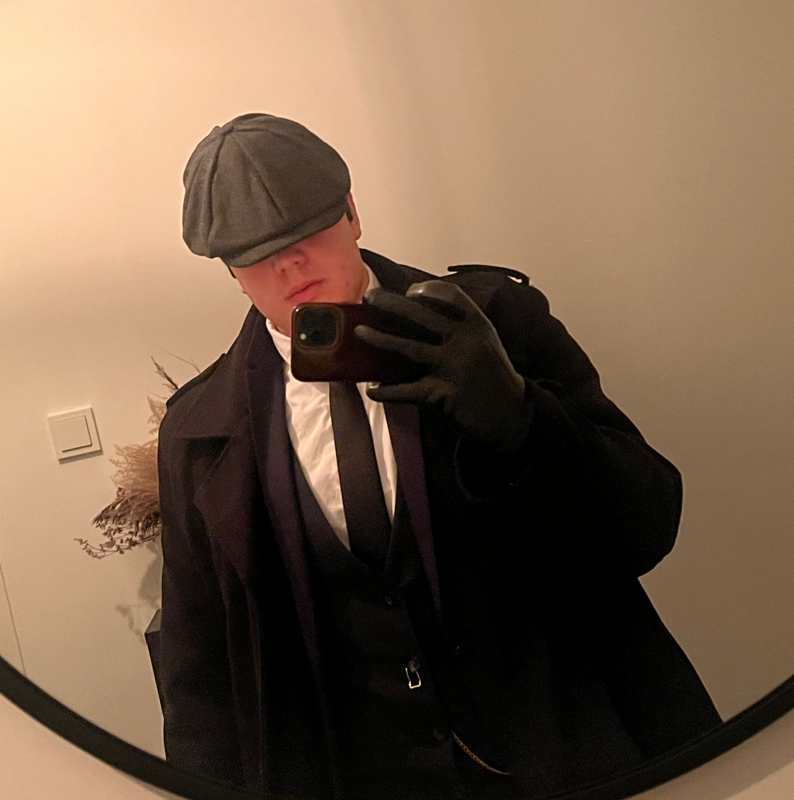

Who are we?
Our podcast is a tribute to music in all its forms. A journey through melodies, rhythms, and stories that are much more than the songs themselves: it’s about the background behind each tune. We'll dive from genres and iconic artists to the effects of music on culture and personal life, and what truly makes it strong and connecting.
Ronald Lommers
Ronald is a true music enthusiast with a love for rock and country. Whether it’s the gritty riffs of classic rock or the stories hidden in a country song, Ronald captivates you with his passion. He brings structure and creativity to our podcast, ensuring that every story is told in just the right tone.
Click to learn moreSenuk Wickramasinghe

Born and raised in Sri Lanka, Senuk brings a touch of international flair to the podcast. He’s passionate about R&B and indie music and always knows exactly how these genres can move people. With his calm voice and sharp insights, he guides you through the story behind the music.
Click to learn moreDex Vkesteren

Dex is our resident DJ and techno enthusiast. In addition to his love for mixing, he knows everything about the structure of electronic tracks and the energy of a great beat. His fresh perspective ensures the podcast always grooves and surprises.
Click to learn moreA casette KeyChain with our branding, only for €2.99
Click to learn moreCurrently playing: Episode 5 : Beats and Demons: Techno’s Rave Revolution and Substance Abuse
Latest Episodes
Episode 5: Beats and Demons: Techno’s Rave Revolution and Substance Abuse
Explore the origins of techno in Detroit, the rise of rave culture, and how the hedonism of the scene sometimes led to struggles with substance abuse.
Click to learn moreEpisode 4: High Notes, Low Moments: The History of Musicals and Mental Health
A deep dive into how Broadway and musicals like Rent and Next to Normal address real-life struggles while offering an escape.
Click to learn more